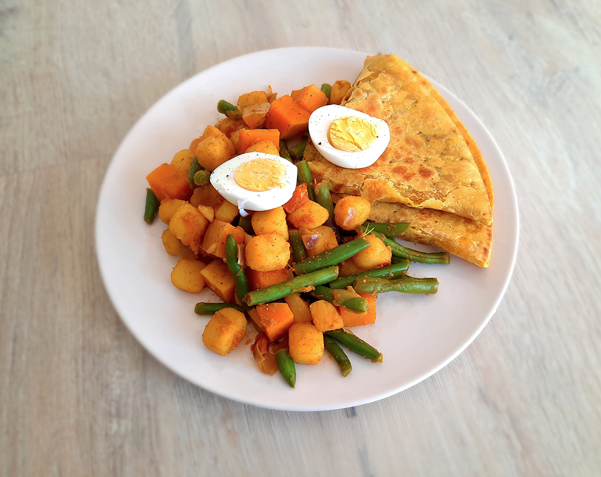

sri lankaanse pompoen curry

pompoensoep

cottage pie

ijslandse lamssoep

thaise massamancurry

macedonische shopska salade

marokkaanse tajine

gnocchi

surinaamse roti
in roti hoort normaal gesproken kousenband maar sperziebonen werken ook erg goed! Voor wat betreft de masala kruiden, zorg ervoor dat je de juiste kruiden hebt en dus niet garam masala! Ook kun je ervoor kiezen om een deel van de aardappelblokjes alleen te bakken.

Bereidingsduur: 60 minuten
Aantal personen: 4
Ingrediënten:
8 roti vellen
400 gram sperziebonen
400 gram pompoen
600 gram aardappelblokjes
1 ui
2 teentjes knoflook
2 tomaten
4 eieren
3 eetlepels masala kruiden
1 theelepel sambal
1 blokje groentebouillon
naar smaak peper
8 roti vellen
400 gram sperziebonen
400 gram pompoen
600 gram aardappelblokjes
1 ui
2 teentjes knoflook
2 tomaten
4 eieren
3 eetlepels masala kruiden
1 theelepel sambal
1 blokje groentebouillon
naar smaak peper
Instructies:
1. Kook de eieren en snijd ondertussen de ui en knoflook en bak kort. Snijd de tomaat en pompoen in blokjes.
2. Verhit in dezelfde pan de blokjes aardappels, pompoen, tomaat, de masala kruiden, sambal, bouillonblokje en wat water. Er hoeft maar een klein laagje water in de pan te staan.
3. Ondertussen kook je de sperziebonen 8 minuten. Voeg deze daarna toe aan de pan en kook tot de groenten gaar zijn.
4. Pak nog een pan en bak de gekookte eieren rondom bruin.
5. Maak de roti klaar volgens de instructies op de verpakking.
6. Leg de roti op een bord en schep hierop het groentemengsel, ei en breng op smaak met peper.
1. Kook de eieren en snijd ondertussen de ui en knoflook en bak kort. Snijd de tomaat en pompoen in blokjes.
2. Verhit in dezelfde pan de blokjes aardappels, pompoen, tomaat, de masala kruiden, sambal, bouillonblokje en wat water. Er hoeft maar een klein laagje water in de pan te staan.
3. Ondertussen kook je de sperziebonen 8 minuten. Voeg deze daarna toe aan de pan en kook tot de groenten gaar zijn.
4. Pak nog een pan en bak de gekookte eieren rondom bruin.
5. Maak de roti klaar volgens de instructies op de verpakking.
6. Leg de roti op een bord en schep hierop het groentemengsel, ei en breng op smaak met peper.
Dit gerecht kun je natuurlijk veganistisch maken door het ei weg te laten!